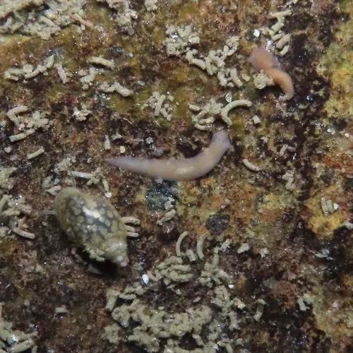

其他无脊椎动物 · 动物界
日本三角涡虫 Dugesia japonica

生活在清澈溪流中的淡水涡虫，再生能力极强，被切断后每段都能长出完整个体，是再生研究的经典材料。
- 分类
- 门扁形动物门纲涡虫纲目三肠目科三角涡虫科属三角涡虫属
- 栖息环境
- 清澈凉爽的溪流、泉水和水草间，藏在石块下
- 地理分布
- 中国、日本和朝鲜半岛的淡水溪流
- 保护级别
- 暂无评估；对水质污染敏感
物种志
日本三角涡虫体长约 1–2 cm，身体扁平柔软，呈叶片状，头部呈三角形，两侧各有一个黑色的眼点，可以感光；体色多为灰褐或黑褐色，腹面有纤毛，靠纤毛滑动和肌肉收缩在水中移动。
它生活在清澈、凉爽的溪流、泉水和水草间，喜欢躲在石块下，取食水生小动物、昆虫幼虫和有机碎屑。日本三角涡虫最著名的是再生能力：身体被切成多段后，每一段都能再生出完整的个体，包括头部和尾部。它因此成为再生生物学和干细胞研究的经典模式动物，被广泛用于研究组织再生和极性。它对水质污染敏感，可作为溪流环境监测的指示生物。在实验室里，它也是再生研究最常用的材料之一。
形态与习性
- 食性取食水生小动物、昆虫幼虫和有机碎屑
- 体长约 1–2 cm
- 形态身体扁平，头部三角形，有两个眼点
- 再生被切断后每段都能再生出完整个体
- 科研再生生物学和干细胞研究的经典模式动物
- 生态对水质污染敏感，可作溪流环境指示生物
趣味知识
- 涡虫被切成几段，每段都能长成一条完整的涡虫。
- 它的头部有两个黑色眼点，可以感知光线强弱。
- 涡虫是研究再生和干细胞的经典实验动物。